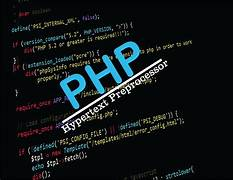

PHP 2
PHP Expertisen
Typenfunktionen Typenfunktionen helfen bei der Manipulation und Überprüfung von Daten. Zahlenbearbeitung: Funktionen wie round() und ceil() runden Werte, während abs() den Absolutwert berechnet. Zeichenkettenoperationen: Funktionen wie substr() extrahieren Teile eines Strings, strtolower() und strtoupper() ändern die Gross- und Kleinschreibung. Array-Operationen: Mit array_merge() werden Arrays kombiniert, array_diff() findet Unterschiede, und shuffle() mischt deren Elemente. Reguläre Ausdrücke Reguläre Ausdrücke dienen der Erkennung und Bearbeitung von Mustern in Strings. Grundlagen: Sie können Leerzeichen (\s), Zahlen ([0-9]) oder bestimmte Zeichenketten ([A-Za-z]{2}) identifizieren. Komplexe Muster: Mit Funktionen wie preg_match() lassen sich spezifische Muster erkennen, z. B. Wortgrenzen (\b) oder Wiederholungen (.*?). Modifikatoren: Diese erweitern die Funktionalität, etwa i für Gross- und Kleinschreibung oder m für mehrzeilige Suchen. Dateisystem PHP bietet Werkzeuge zur Dateiverwaltung. Prüfen: Funktionen wie file_exists() oder is_readable() überprüfen Eigenschaften von Dateien. Manipulation: Dateien können mit copy(), rename() oder unlink() bearbeitet werden. Lesen und Schreiben: Mit fopen(), fgets() oder file_put_contents() lassen sich Dateien öffnen, auslesen oder beschreiben. Funktionen Funktionen sind zentrale Bausteine in PHP zur Wiederverwendung von Code. Definition: Sie beinhalten Name, Parameter und Rückgabewert. Parameter fungieren als Platzhalter für übergebene Werte. UDFs (User-Defined Functions): Benutzerdefinierte Funktionen erlauben es, spezifische Aufgaben effizient umzusetzen. Modularität: Funktionen strukturieren den Code, erleichtern Wartung und Wiederverwendung. Fazit PHP ist durch seine vielseitigen Funktionen und Werkzeuge ein leistungsfähiges Werkzeug in der Webentwicklung. Typenfunktionen und reguläre Ausdrücke vereinfachen die Datenbearbeitung, während Dateisystemoperationen und Funktionen die Organisation und Verarbeitung erleichtern. Die Flexibilität und der modulare Ansatz von PHP ermöglichen eine effiziente und strukturierte Programmierung.